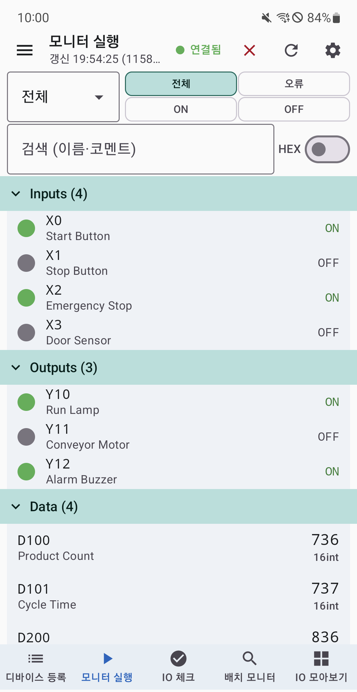

01 · 모니터링과 IO 체크
필요한 신호를 모아,
값과 상태를 한눈에.
X/Y/M/L/B 비트와 D/W/ZR 워드를 자동 폴링합니다. 검색과 그룹, 상태 필터로 필요한 디바이스를 찾고, IO 체크에서 OK/NG 결과를 기록하세요.
- 수동, 자동, 안내형 순차 IO 체크
- 10진, 16진, 실수, 문자열 등 값 표시
- 배선 맞바꿈과 단락 점검
- 점검 결과와 통신 오류를 구분해 확인
- CSV와 요약 리포트로 결과 공유
자동 점검은 설비를 자동 운전하거나 출력을 강제로 켜는 기능이 아닙니다.
